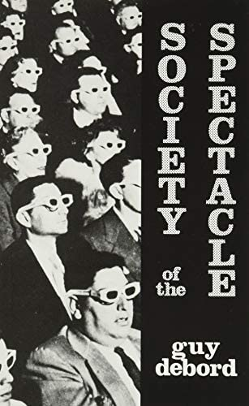

✧༺∞ aespa as spectacle ∞༻✧
Aespa (/ɛsˈpɑː/ es-PAH; Korean: 에스파; RR: eseupa; MR: esŭp'a, commonly stylized in all lowercase or æspa) is a South Korean girl group formed by SM Entertainment.
The group consists of four members: Karina, Giselle, Winter, and Ningning. Each member has a virtual avatar paired with them known as their æs.
The æs are integrated into the group's concepts and often make appearances in their music video performances...
The way SM entertainment has designed aespa's concept feels very Guy Debord Society of the Spectacle.

“For one whom the real world becomes real images, mere images are transformed into real beings — tangible figments which are the efficient motor of trance-like behavior.”
This video below discusses the relationship I see between the two.
AESPA AVATARS AS MODERN SPECTACLE
There's also the obvious reference to make here to donna haraway's The Cyborg Manifesto. But as I explain in the video below, I think the whole concept of aespa is the opposite of empowering. It's not about multiplicity at all (as Haraway writes about), but instead about cyborg as project to further efforts toward "goddess."
AESPA AVATARS AS CYBORGS BUT LIKE NOT IN A CYBORG MANIFESTO WAY... KIND OF A WORSE WAY
Finally, let's consider how people react to these avatars... how much do people value the "realness" of a pop star?

AESPA AVATARS AS CHALLENGERS TO "REALITY"
What do you think?
Thanks for watching :)